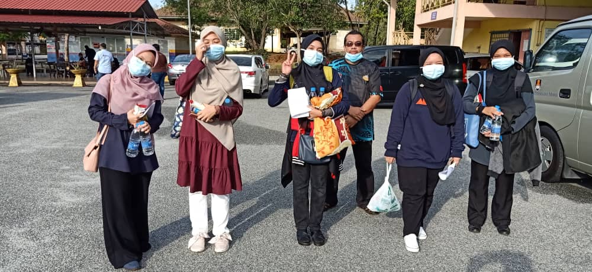
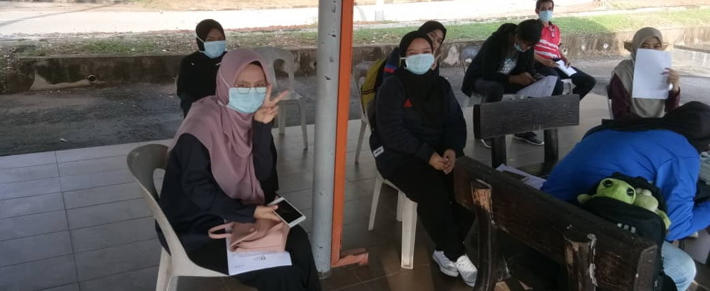
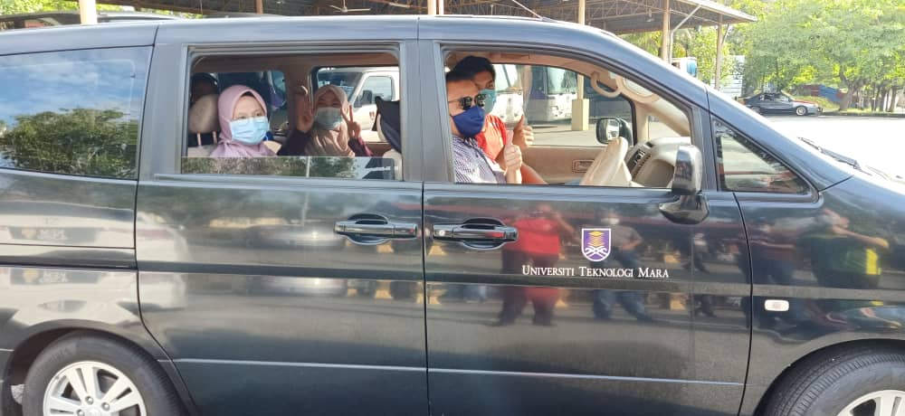
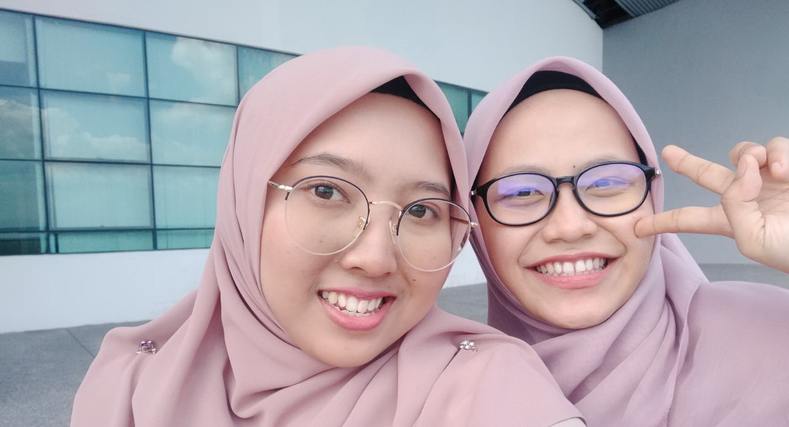
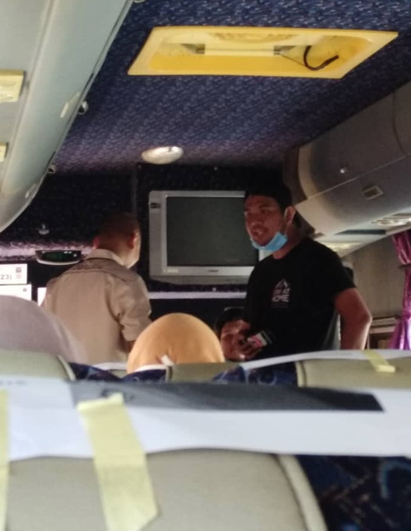

Experiences
Experiences
HOMEPAGE
“People never learn anything by being told, they have to find out for themselves.”
― Paulo Coelho, Veronika Decides to Die

MCO Survivor at Campus

last batch for going home :c

heading home finally!!

Internship Family :)

at the 5th floor of the Library

end of the internship

credits for our YDP MPP
who struggles a lot for us throughout the MCO